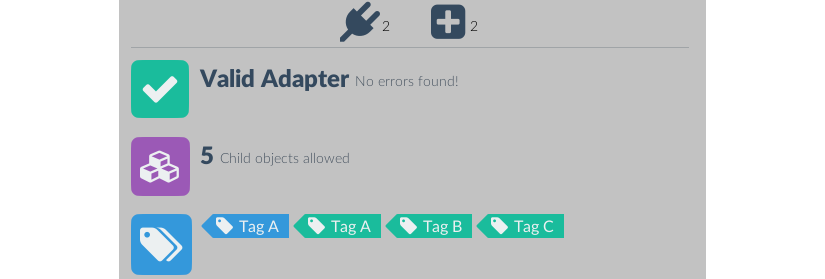
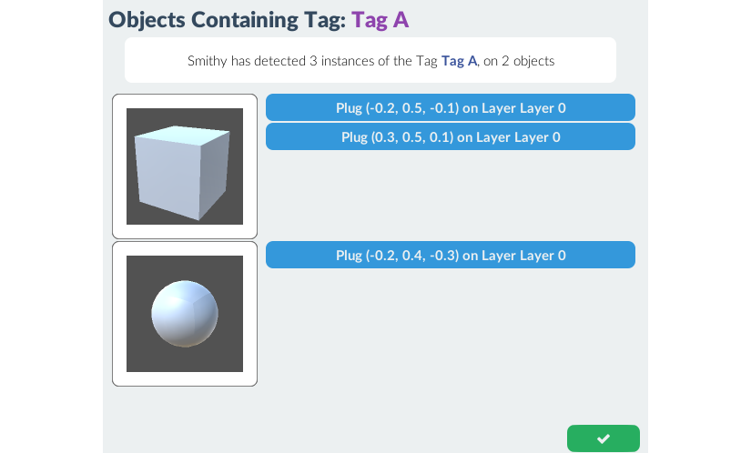
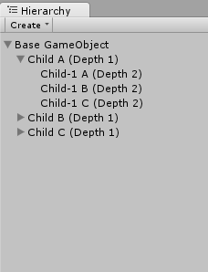
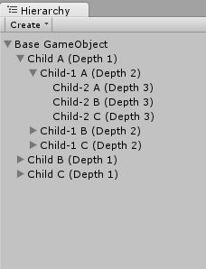
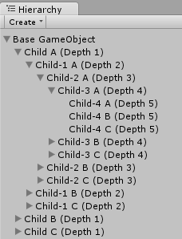
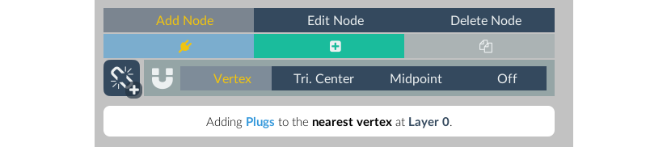
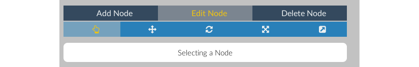

Overview
Smithy Adapters are Components that contain Nodes, and are required for procedurally generating objects.
Adapters are added by clicking Add Component in the GameObject inspector, and selecting Smithy Add Smithy Adapter
Inspector
Adapters are equipped with a custom inspector, which is the principal point of access for working with Nodes. Once a Smithy Adapter component is added to a GameObject, it will appear in that GameObject's component inspector.
Very narrow inspector layouts may make some UI components overlap. If this is the case, widen the inspector window to a comfortable width.
Navigation
The Navigation panel accesses the Information Panel, the Node Editor, and the Object Assembler. The Node Editor and Object Assembler are only available when the GameObject is active in the hierarchy. If the GameObject is saved as a prefab, these options will be disabled.
Saving
Smithy uses asset labels and prefab assets during procedural generation. Therefore, GameObjects must be saved as prefabs before they can be used by Smithy.
Correctly saved and labeled prefabs are crucial to Smithy's operation, so each Adapter is able to manage the saving of it's linked prefab. Simply activate the autosave in the save menu once a prefab has been linked.
The top right corner of the navigation panel contains the Save indicator. The icon changes based on state:
| Indicator | Status | Description |
|---|---|---|
| Unsaved (no prefab) |
This GameObject has not been saved as a prefab. Clicking this icon will allow you to save the GameObject and create a prefab connection. | |
| Unsaved | This GameObject has a prefab connection but has unsaved changes. Clicking this icon will save changes to the prefab, or, allow you to activate Smithy's autosave feature. | |
| Saving | This GameObject is currently saving any changes. This should only take a brief moment, but allow it to save before starting a build or entering Game mode. | |
| Prefab OK (autosave off) | This GameObject has a prefab connection that is current with any changes made. Autosave is not on and the GameObject will need to be saved manually. Click to activate autosave. | |
| Prefab OK (autosave on) | This GameObject has a prefab connection that is current with any changes made. Autosave is on. Click to deactivate autosave. |
Information Panel
 The information panel is the first navigation panel option and provides an at-a-glance display of all critical Node information. The information panel is comprised of a warning panel, a generation depth counter, and a tag list panel.
Warning Panel
The warning panel will display any issues that might affect the operation of this adapter or its nodes. It has two states:
| Valid | Problems Detected (where # is the number of issues) |
Issues that Smithy detects are arranged into three categories:
| Warning | Important | Critical |
|---|---|---|
| These will not cause problems with generation, but may potentially produce undesirable results | These issues are will generate poor or unexpected results, but will not cause errors | This issues are serious and will throw errors or prevent any Nodes on this adapter from being detected. |
Alt-clicking the warning icon will open the relevant troubleshooting link in a new browser window.
Generation Depth Panel
Displays the maximum generation depth for this adapter.
Tag List Panel
Displays a list of all Tags present on the Adapter's nodes. Tags present on Plugs will be shown in blue, and Tags present on Sockets will be shown in teal.
Clicking a tag will open the Tag Search popup window:  This will list all Smithy-enabled objects with matching tags, as well as the specific nodes that are set to the same tag.
Node Editor Panel

The node editor panel is used for adding, editing, and deleting Plug and Socket nodes. It consists of the Generation Depth Panel, Node Palette, and Layer Panel.
Generation Depth
The generation depth panel sets an int value the maximum number depth of children this adapter can generate, if it is the base object.
In other words, a base object with a maximum generation depth of n can have a GameObject hierarchy that is, at most, n levels deep.
For example:
| depth = 2 | depth = 3 | depth = 5 |
|  (13 GameObjects at Width = 3) |
 (40 GameObjects at Width = 3) |
 (364 GameObjects at Width = 3) |
The default maximum generation depth is 5
Node Palette
The Node Palette contains the controls to add, move, adjust, and delete nodes.
Add Node Tab

| Add Plug | Add Socket | Clone Node |
From left to right, the tabs under the add node tab switch the add mode to Plug, Socket, and Clone. Moving the mouse over the object mesh in the Scene View Window will draw a magenta dot - this is the placement point for new nodes. Left click the mouse, and a new node of the selected node type will be at the placement point.

Smithy manages an automatically-generated MeshCollider specifically for adding and moving nodes around object models, so you can add nodes directly to the surface of your mesh. To help with placement, the Node Palette includes several mesh snapping options:
| Vertex | Triangle Center | Midpoint | Off |
|---|---|---|---|
| Snaps the placement point to the vertex nearest the mouse cursor | Snaps the placement point to the centroid of the face trivector under the mouse cursor | Snaps the placement point to the midpoint of the edge nearest the mouse cursor | Disables snapping. The placement point will appear at the intersection of a ray fired from the mouse position. |
However, having a mesh isn't necessary, and Smithy will operate on meshless GameObjects. This is useful for creating nodes that handle pure code functions like AI behavior, mesh-agnostic particle effects, audio modifiers, and anything else that is useful for procedural generation but does not necessitate a mesh.
Either way, clicking the button will add a new node to (0,0,0).
Edit Node Tab

| Select Node | Move Node | Rotate Node | Scale Node | Adjust Connection Vector |
From left to right, the tabs under the Edit Node Tab set selection mode, move mode, and connection vector mode.
In selection mode, left-clicking on a node in the Scene View Window will select that node in the inspector. The Gizmo icon will turn yellow to highlight when it's under the mouse pointer, and green when it has been selected. Nodes can also be selected by clicking the name of the node in the Layer Panel.
Move mode allows repositioning of the selected node. If a node is not currently selected (highlighted green in the Scene View and layer panel), this option will be disabled.
Move mode appends a subpanel to the palette with the following icons:

By default, move mode draws a Unity movement handle in the Scene View that can be used to drag the node around the edit area.
By clicking the toggle, the movement handles will disappear and the magenta placement point will appear when the mouse enters the Scene View. Left clicking in the scene view will set the node's position to the placement point position.
By default, a node moved in this manner will recalculate its' Connection Vector (it will try to align to the new surface normal). To prevent this behavior, click the button, which will toggle connection vector preservation.
Adjust Connection Vector mode draws a Unity rotation handle at the node position. This can be dragged in any axis to set the Connection Vector of the node. This mode will also append the following connection vector quick-set subpanel to the palette:
| World Up | World Down | World Left | World Right | World Forward | World Backward | Nearest Surface Normal | Align to Object Center |
Clicking any of these options will directly set the node's connection vector.
Delete Node Tab
Delete mode will delete the node nearest the mouse cursor when left-clicking in the scene view.
Palette Information Panel

For clarity's sake, there is an information box located at the bottom of the palette. This box reports the currently selected option, or set of options.
Node Layers
Nodes on an adapter are collected into layers. These layers are just an organizational tool - they don't affect generation - but can be used to edit multiple nodes at once.
All adapters have at least one layer. Smithy does not allow adapters without layers, and deleting the last layer on an adapter will replace it with a new layer. Layers without nodes are, however, valid.
The current active layer (the layer that will contain nodes added through the Node Palette) is colored teal. Inactive layers are colored navy, and can be activated by clicking the layer name. Only one layer can be active at a time.

| Expands or collapses the layer's node list | |
| The active layer's name. | |
| An inactive layer name. Click to set as the active layer. | |
| Opens the Layer Window | |
| Reverses the ordering of the layer's node list. | |
| Sort nodes. Nodes can be sorted by type, name, tags, selection probability, position (x, y, or z), or by visibility. | |
| Toggle visibility for all nodes in the layer. Invisible nodes will still contribute to generation. | |
| Delete the layer and all nodes it contains. |
New layers can be added by clicking the button below the layers panel.
The nodes in each layer contain their own control pills, which are explained in the Node Editor Pills section of the documentation on nodes.
Layer Window

The layer window allows several of the Node Window controls to be applied to multiple nodes at once.
The left column is the node selection set. This is a list of all nodes on the layer, by type and name. The bottom of this column contains buttons for selecting/deselecting all plugs, selecting/deselecting all sockets, and selecting/deselecting all nodes.
The right-hand column contains the following five controls:
| Contains the same set of connection vector quick-set buttons as in the Adjust Connection Vector Mode of the Node Palette. These buttons function identically to the palette set, and when clicked, the connection vectors of all selected nodes will be changed. | |
| Clicking a Preset will apply values to that preset to all selected nodes. | |
| This is the same Tag Manager as in the Node Settings Window, but changes here will be applied to all nodes in selection. Tags that appear in multiple nodes will be marked with a number corresponding to the number of nodes selected that contain the tag. | |
| Like the Node Settings Window, but applies the entered jitter values to each node in the selection. | |
| Material Options added here will be copied to all nodes in the selection |
These controls operate over every node currently selected in the left hand panel. After a successful operation, a notification box will appear in the window for a few seconds.
Node Pills
When a Node Layer is expanded, it will show a list of all nodes that exist on that layer. Each node is represented by a pill menu that offers the following controls:
| Change the Node Type of the node. | |
| Click to select the Node | |
| Open the Node Settings Window | |
| Reports the number of tags on the node. Clicking will open the node's tag manager | |
| Reports the socket fill probability or plug selection weight of the node. Click to open the node's probability settings window | |
| Change the node's Layer | |
| Change the order of the node in its layer (overrides sorting options) | |
| Toggle the visibility of the node | |
| Delete the node |
Object Assembler Panel

The Object Assembler panel is a quick way to manually build object hierarchies and test generation in the Editor.
Socket View Panel
The socket view panel is similar to the Node Layer Panel, but only displays the sockets on the adapter. Slightly different from the Node Editor Node Pills, each socket pill contains the following options:
| Change the Node Type of the node. Sockets changed to plugs will be removed from the Object Assembler Socket View | |
| Click to select the Node | |
| Open the Node Settings Window | |
| Generate a plug object for this node (ignores socket fill probability) | |
| Destroy the child plug of this socket, if it exists. | |
| Displays the name of the current child plug for this node, if it exists. Clicking on this icon will open the Plug Selector Window | |
| Change the socket's Node Layer | |
| Change the order of the socket in its layer | |
| Toggle the visibility of the socket | |
| Delete the socket |
Plug Selector

Clicking the button of a socket pill will open the Plug Selector Window, which will show all adapter-enabled prefabs that are valid as plug objects for this socket.
Clicking one of these objects will instantiate a copy as a plug object for the current socket.
By default, the plug selector window will only display plug objects that share one or more tags with the current socket. Clicking one of these tags will bring up the tag search popup.
Clicking the button to toggle the tag override mode. While tag override is on, any plug can be set to the current socket, regardless of tags.
Generating in Editor Mode
The Object Assembler will also let you procedurally generate objects in the editor. At the bottom of the socket view panel, there are four buttons. From left to right:
| Set Generator Seed | Toggle to activate the generation seed | |
| Run Generator | Procedurally generate an object hierarchy, using a generator (respects socket fill probability settings) | |
| Fill All Sockets | Generates a plug for every available socket (ignores socket fill probability settings) | |
| Clear All Sockets | Clear all sockets, destroy all plug objects, and reset the object hierarchy. |
Generation Seed
All Smithy generators can take a an int value as a random seed. Generations with a random seed with always produce the same output given the same inputs. Because Editor and runtime generators operate identically, seeds found in the object assembler and passed to runtime generators will generate the same output.
However, new inputs like more or fewer available plugs will "break" known seeds. That is, the same seed operating over two distinct selection sets will not produce identical results. If seed values are an important part of your project, it's best to only set seeds once all assets and adapters are locked in.
Save As Fixed Object
The object assembler can also save out object hierarchies stripped of all Smithy interfaces ("fixed"). Clicking the at the bottom of the object assembler panel will save a modified copy of the object heirarchy as a prefab.
The prefab will not include any Smithy adapters or nodes, but it will still have the same GameObject parent/child relationships.
This is useful if your project can make use of Smithy's rapid assembly functions, but has no real need for runtime procedural generation.